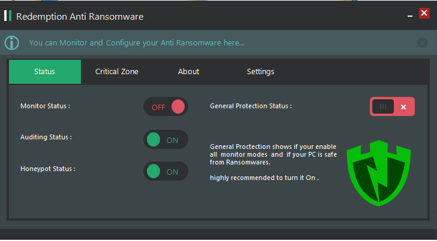
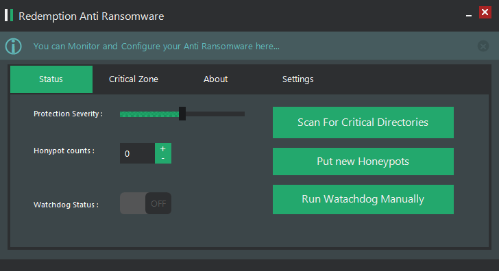
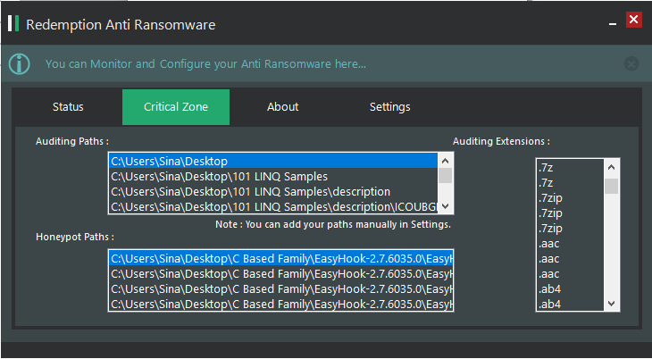

In the last few days, I was asked to give a new idea for creating an anti ransomware and now I wanna share my idea and source codes.
The Full Source Code Is Available at : https://github.com/SinaKarvandi/Redemption-Anti-Ransomware/
Introduction
In the raise of computers in this century and as they largely used in transferring and storing sensitive data, Ransomware is a big danger which can compromise everything in a blink of an eye and causes huge loss of data or money,
according to Wikipedia:
Ransomware is computer malware that installs covertly on a victim’s device (e.g., computer, smartphone, wearable device) and that either mounts the cryptoviral extortion attack from cryptovirology that holds the victim’s data hostage, or mounts a cryptovirology leakware attack that threatens to publish the victim’s data, until a ransom is paid. Simple ransomware may lock the system in a way which is not difficult for a knowledgeable person to reverse, and display a message requesting payment to unlock it. More advanced malware encrypts the victim’s files, making them inaccessible, and demands a ransom payment to decrypt them. The ransomware may also encrypt the computer’s Master File Table (MFT) or the entire hard drive. Thus, ransomware is a denial-of-access attack that prevents computer users from accessing files since it is intractable to decrypt the files without the decryption key. Ransomware attacks are typically carried out using a Trojan that has a payload disguised as a legitimate file.
This kind of malware is dependent on Cryptography functions and I/O activities as a part of their natures and this dependency could give us a really good resource for control and audit to prevent such this activities.
The bad thing is that there is no permanent method to avoid such a malware (and it seems never be) because of billions of I/O activities that take place asynchronously in a system but being innovative can give security researchers an opportunity to evacuate a vast amount of ransomware and make it really hard and sometimes nearly impossible for bad guys to reach to their target, but as mentioned before there are many sophisticated way that could circumvent and bypass this protections. In the following article , we will show you our method of controlling ransomware which is a combination of previously invented methods and new methods to improve the detection and dismissing ransomware.
Assumption
We build our new method based on this assumptions:
1. Ransomware encrypts data to be decrypt in future.
Even our implementation prevents Denial of Service Attack (e.g. ransomware which encrypts data and delete the key without any plan to recover and decrypt in future.) but the nature of ransomware is that it reads data and it encrypt then deleteS or changeS the original data to cause a Denial of Access.
This assumption is the base idea to prevent ransomware in the case of our implementation, we don’t see any bad behavior in just reading the data. (as it itself could bring some bypasses for instance Signed Drivers which encrypt and modify data from base cannot be prevented in our method but it is somehow impossible for ransomware to introduce themselves as a Signed Driver in Amd64 structured systems even there are some bypasses for this prevention too !).
2. We assume that the users give us the highest available privilege and it is clear that Windows definitely prevents us from access the higher privilege ransomware.
3. Ransomware is not a Driver Process.
If the user system infected by Driver Ransomware it can’t prevented by no one as it goes to zero rop of kernel and it can even bypass Windows PatchGuard.
Fortunately there is no easy way to access this rop and there are many complicated mechanism to prevent this behavior and there is no major ransomware which reaches to zero rop of kernel by now.
4. We assume that the only way to access files is ReadFile and WriteFile as described in the resource section.
There are tons of other ways to write to files (e.g. Native API’s which must of them implemented in ntdll.dll likeNtOpenFile(…) and NtReadFile(…) which can also be used to access files.) but the audit is just on the two major above functions and you can understand that this method could be implemented to all other functions if you have a complete list of file accessing functions but it wants time to test and improve to make a reliable anti ransomware.
5. Ransomware are only interested in special kinds of file.
We make more than 450 formats of extensions (that could be developed by users easily) which ransomware are more interested to encrypt, the experience shows that ransomware only encrypts special kinds of extensions because if they encrypt computer completely, it could cause an early Denial of Service which could apprise user before the encryption cycle complete and prevent ransomware from any further encryption which causes it’s mission to be unaccomplished.
The extensions that we audit by default is listed below.
Audit Extension
.yuv, .ycbcra, .xis, .x3f, .x11, .wpd, .tex, .sxg, .stx, .st8, .st5, .srw, .srf, .sr2, .sqlitedb, .sqlite3, .sqlite, .sdf, .sda, .sd0, .s3db, .rwz, .rwl, .rdb, .rat, .raf, .qby, .qbx, .qbw, .qbr, .qba, .py, .psafe3, .plc, .plus_muhd, .pdd, .p7c, .p7b, .oth, .orf, .odm, .odf, .nyf, .nxl, .nx2, .nwb, .ns4, .ns3, .ns2, .nrw, .nop, .nk2, .nef, .ndd, .myd, .mrw, .moneywell, .mny, .mmw, .mfw, .mef, .mdc, .lua, .kpdx, .kdc, .kdbx, .kc2, .jpe, .incpas, .iiq, .ibz, .ibank, .hbk, .gry, .grey, .gray, .fhd, .fh, .ffd, .exf, .erf, .erbsql, .eml, .dxg, .drf, .dng, .dgc, .des, .der, .ddrw, .ddoc, .dcs, .dc2, .db_journal, .csl, .csh, .crw, .craw, .cib, .ce2, .ce1, .cdrw, .cdr6, .cdr5, .cdr4, .cdr3, .bpw, .bgt, .bdb, .bay, .bank, .backupdb, .backup, .back, .awg, .apj, .ait, .agdl, .ads, .adb, .acr, .ach, .accdt, .accdr, .accde, .ab4, .3pr, .3fr, .vmxf, .vmsd, .vhdx, .vhd, .vbox, .stm, .st7, .rvt, .qcow, .qed, .pif, .pdb, .pab, .ost, .ogg, .nvram, .ndf, .m4p, .m2ts, .log, .hpp, .hdd, .groups, .flvv, .edb, .dit, .dat, .cmt, .bin, .aiff, .xlk, .wad, .tlg, .st6, .st4, .say, .sas7bdat, .qbm, .qbb, .ptx, .pfx, .pef, .pat, .oil, .odc, .nsh, .nsg, .nsf, .nsd, .nd, .mos, .indd, .iif, .fpx, .fff, .fdb, .dtd, .design, .ddd, .dcr, .dac, .cr2, .cdx, .cdf, .blend, .bkp, .al, .adp, .act, .xlr, .xlam, .xla, .wps, .tga, .rw2, .r3d, .pspimage, .ps, .pct, .pcd, .m4v, .fxg, .flac, .eps, .dxb, .drw, .dot, .db3, .cpi, .cls, .cdr, .arw, .ai, .aac, .thm, .srt, .save, .safe, .rm, .pwm, .pages, .obj, .mlb, .md, .mbx, .lit, .laccdb, .kwm, .idx, .html, .flf, .dxf, .dwg, .dds, .csv, .css, .config, .cfg, .cer, .asx, .aspx, .aoi, .accdb, .7zip, .1cd, .xls, .wab, .rtf, .prf, .ppt, .oab, .msg, .mapimail, .jnt, .doc, .dbx, .contact, .n64, .m4a, .m4u, .m3u, .mid, .wma, .flv, .3g2, .mkv, .3gp, .mp4, .mov, .avi, .asf, .mpeg, .vob, .mpg, .wmv, .fla, .swf, .wav, .mp3, .qcow2, .vdi, .vmdk, .vmx, .wallet, .upk, .sav, .re4, .ltx, .litesql, .litemod, .lbf, .iwi, .forge, .das, .d3dbsp, .bsa, .bik, .asset, .apk, .gpg, .aes, .ARC, .PAQ, .tar.bz2, .tbk, .bak, .tar, .tgz, .gz, .7z, .rar, .zip, .djv, .djvu, .svg, .bmp, .png, .gif, .raw, .cgm, .jpeg, .jpg, .tif, .tiff, .NEF, .psd, .cmd, .bat, .sh, .class, .jar, .java, .rb, .asp, .cs, .brd, .sch, .dch, .dip, .pl, .vbs, .vb, .js, .asm, .pas, .cpp, .php, .ldf, .mdf, .ibd, .MYI, .MYD, .frm, .odb, .dbf, .db, .mdb, .sql, .SQLITEDB, .SQLITE3, .011, .010, .009, .008, .007, .006, .005, .004, .003, .002, .001, .pst, .onetoc2, .asc, .lay6, .lay, .ms11 (Security copy), .ms11, .sldm, .sldx, .ppsm, .ppsx, .ppam, .docb, .mml, .sxm, .otg, .odg, .uop, .potx, .potm, .pptx, .pptm, .std, .sxd, .pot, .pps, .sti, .sxi, .otp, .odp, .wb2, .123, .wks, .wk1, .xltx, .xltm, .xlsx, .xlsm, .xlsb, .slk, .xlw, .xlt, .xlm, .xlc, .dif, .stc, .sxc, .ots, .ods, .hwp, .602, .dotm, .dotx, .docm, .docx, .DOT, .3dm, .max, .3ds, .xml, .txt, .CSV, .uot, .RTF, .pdf, .XLS, .PPT, .stw, .sxw, .ott, .odt, .DOC, .pem, .p12, .csr, .crt, .key
Please note that the users can add their own extensions on the above list.
Implementation
In a non-technical point of view, we create honeypots all over the computer and scan for interested files in directories to make a Critical Zone Table (CZT).
The content of CZT should be safe from massive changes, if an application edited or deleted a content in CZT the Watchdog process immediately put that directory in Critical Mode (CM) and then searches for all the processes in Windows to find all of the available File Handles from the files which is in Critical Mode Folder (CMF), now if any process (which probably is the last one that access to directory) has any File Handle to files in CMF is attacked by Watchdog, even this a good way for prevent ransomware but it could bring us a vast amount of false positive result.
So the Watchdog doesn’t suspend or Kill the process but inject itself into that process and replace all the CreateFile , OpenFile , DeleteFile and all other stuffs which could cause the loss of data in Hard Disk.
So now the Watchdog is responsible for all changes in Hard Disk and Watchdog’s overrided functions is called before any changes and it do a Back up for all the deleted files and modified files that has over 50% of changes in their body in a safe place and then performs the application’s modification to avoid any error in application cycle or any false positive in result.
This backup files are saved for 10 days then deleted automatically to prevent extra charges in hard disk.
If any ransomware encrypts the data in CZT then the data is available by Anti Ransomware and could be backed.
This method gives a lot of interesting result because the ransomware still thinks that it successfully encrypted the data and send attacker a successful message but the encrypted files are backed up in real time and that attacker might think that ransomware’s mission is accomplished but the owner could have their raw file immediately without any concern.
The second methodology is Honeypot.
Honeypots are a good way for detecting ransomware cuz there is no way for general ransomware to understand which file is a truly document and which is in fact a honeypot. (This can be bypass when a ransomware has a special target and just attempt to encrypt that target and nothing more which in this scenario it could be prevented by first methodology.).
The approach of Honeypot methodology is to Suspend and Kill then delete every process which wants to modify Honeypots.
Even this method can be bypassed but it’s still a good and precise way for detecting ransomware, because there is no reason for any process to modify the files that doesn’t interfere with them and you can be more than one hundred percent sure that it wants to do something evil.
Technical Preview
Even the best method for implementing this approach is to write a customized file system driver but the lack of signing causes us to bring another solution.
We use FileSystemWatcher which is .Net Framework library to detect any modification in a CZT.
When anything detected no one can give us any hint that what process was responsible for that change then we use NtSystemInfo which use Windows API NTQuerySystemInformation for searching and enumerating handles form all available Windows Processes then if we find anything, inject our customized function to that process but if not detected anything then continue listening for a while and if it continues without detection the CMF flag is disappeared and shows that no process wants to change any other file in CMF.
Modification Kinds
In this methodology we just enumerate delete and modify as a harmful alert for Watchdog.
Delete is always an alert but in the case of modification we simply compare the result before and after the modification and backup from files which has a large amount of modified content, this achieved by using SimMetric Libraries by implementing Byte similarities by Jaro–Winkler distance and Smith-Waterman string similarity algorithms and the average of this two algorithms gives us a number which 50% or more modification rings an alert for backup but less than this number is ignored.
Benefits
The best benefit for this method is it can make all process continue their cycles without any error.
False Positive result will cause users to disable their anti ransomware but the main idea behind this anti ransomware is to allow system work properly even it is infected with ransomware or with applications which are for good purpose but act like ransomware or have ransomware behavior which is common.
Conclusion
The method described above is a good way to prevent the majority of ransomware attacks but even there are lots of circumstances but it could prevent all massive changes in hard drive which is main idea of ransomware and it could defuse all general and massive encrypt purpose ransomware and make a real-time backup and let process continue without any false positive result that can be a reason to Denial of Service by some anti ransomware.
Resources
ReadFile: https://msdn.microsoft.com/en-us/library/windows/desktop/aa365467(v=vs.85).aspx WriteFile: https://msdn.microsoft.com/en-us/library/windows/desktop/aa365747(v=vs.85).aspx Import Address Table: https://en.wikipedia.org/wiki/Portable_Executable#Import_Table Similarity Test: https://asecuritysite.com/forensics/simstring Jaro-Winkler: https://en.wikipedia.org/wiki/Jaro%E2%80%93Winkler_distance Waternan: https://en.wikipedia.org/wiki/Smith%E2%80%93Waterman_algorithm
Some Pictures from the UI


(Please note that it is just an idea and it doesn’t implemented to be a final heal for ransomwares, if you want to use this idea you’d better to hook native windows api by a driver.)
To download source code please visit : https://github.com/SinaKarvandi/Redemption-Anti-Ransomware/
Comments powered by Disqus.